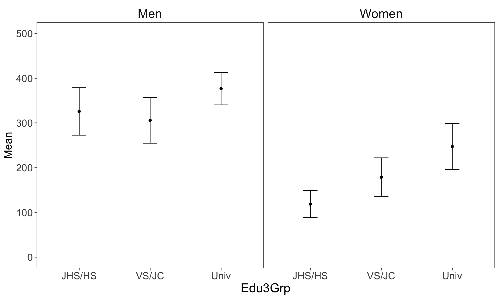

library(tidyverse)
FN_Data2Load <- "data/Anova_SexEduIncome.rds"
DF_org <- read_rds(FN_Data2Load)11 多元配置分散分析
11.1 データ・変数
11.1.1 データ
以下では次の問いに答えることを目的とする。
Q: 学歴と性別によって個人収入に違いはあるのか？
なお、今回は分析対象を25-34歳の男女に限定する。
11.1.2 変数
「第7回 分散分析」の最後のセクションで保存したAnova_SexEduIncome.rdsを用いる。以下の変数が格納されたtibbleになっているはずである。
- 回答者の性別:
sex - 回答者の学歴:
Edu- 以下の3カテゴリにリコード済み
- 中学・高校(
JHS/HS) - 専門・短大(
VS/JC) - 大学・大学院(
Univ)
- 中学・高校(
- 以下の3カテゴリにリコード済み
- 回答者の個人収入:
Income- 回答選択肢の中央値にリコード済み
なお、回答者の年齢もすでに25-34歳に限定されている。
回答者の性別sexは原データの変数がそのまま入ったものなので、カテゴリカル変数として定義し直しておこう。
DF <-
DF_org |>
mutate(Sex = if_else(sex == 1, "Men", "Women")) |>
select(Sex, Edu3Grp, Income)11.2 グループ別平均値の算出
つづいて、グループ別に個人収入の平均値を算出する。今回の例では、性別と学歴の2つの説明変数が存在するため、これら2変数の組み合わせからなるグループ別に平均値を算出してみよう。
11.2.1 {base}
{base}環境でグループ別に統計量を算出するためにはtapply()が便利である。これはapply()関数族の一種であり、apply()は行列や配列に適用するのに対してtapply()はベクトルに適用される。tapply()は主に3つの引数からなり、
X: 関数を適用する対象となるベクトルINDEX: グループ化するためのカテゴリを指定する要素（ベクトルやリスト）FUN: 適用する関数
2変数以上の組み合わせからなるグループ別に統計量を算出する場合、2つめの引数INDEXをリストで引き渡すことがポイントである。
DF |> with(tapply(Income, list(Sex, Edu3Grp), mean)) # tapplyで複数の要因ごとに処理を施すためにはlistで引き渡す JHS/HS VS/JC Univ
Men 325.7212 305.8468 376.4482
Women 118.4593 178.5948 247.2403DF |> with(tapply(Income, list(Sex, Edu3Grp), sd)) JHS/HS VS/JC Univ
Men 210.6165 156.4481 180.0562
Women 108.9679 208.7452 176.3531DF |> with(tapply(Income, list(Sex, Edu3Grp), length)) # グループ別の客体数 JHS/HS VS/JC Univ
Men 104 62 164
Women 86 153 77このように、tapply()の返り値は行列（や配列）のため、グループ別の集計結果も視覚的にわかりやすい。
11.2.2 {tidyverse}
「第7回 分散分析」でも確認したように、グループ別の集計は{tidyverse}でも簡単に行うことができる。グルーピングに用いる変数が2つ以上の場合は、group_by()にそれらの変数を指定する。
DF |>
group_by(Sex, Edu3Grp) |>
reframe(Mean = mean(Income),
SD = sd(Income),
Obs = n())# A tibble: 6 × 5
Sex Edu3Grp Mean SD Obs
<chr> <fct> <dbl> <dbl> <int>
1 Men JHS/HS 326. 211. 104
2 Men VS/JC 306. 156. 62
3 Men Univ 376. 180. 164
4 Women JHS/HS 118. 109. 86
5 Women VS/JC 179. 209. 153
6 Women Univ 247. 176. 7711.3 データの可視化
多元配置分散分析では説明変数が増えていくにつれてグループ数も増えていく。そのため、算出されたグループ別平均を眺めているだけではどのような傾向が見られるのかわかりにくいことも少なくない。そこで、まずはグループ別平均を可視化しておくとよい。
# グラフ化するデータの準備
data2plot <-
DF |>
group_by(Sex, Edu3Grp) |>
reframe(Mean = mean(Income),
SE = sd(Income) / sqrt(n())
) |>
mutate(
CI_lower = Mean - qt(0.975, df = n()-1) * SE, # 95%信頼区間下限
CI_upper = Mean + qt(0.975, df = n()-1) * SE # 95%信頼区間上限
)今回の例では、性別と学歴の組み合わせごとに個人収入の平均値が算出されている。このデータを可視化するにあたって、以下の2つの「データの眺め方」があることに注意されたい。
- 学歴別にみた個人収入の男女差
- 男女別にみた個人収入の学歴差
1において関心があるのは「個人収入に対する性別の効果」である。さらにいえば、そうした収入の男女間格差が学歴階層によって異なるのか、という問いにも対応している。後者はいわゆる交互作用効果（interaction effects）の有無を問うことになる。
一方で、2において関心があるのは「個人収入に対する学歴の効果」、そして収入の学歴差が男女間で異なるのか、という問いである。
これらの2つの視点の違いに注意しながら、それぞれデータを可視化すると以下のようになる。
Code
data2plot |>
ggplot(aes(x = Sex,
y = Mean)
) +
facet_grid(~ Edu3Grp) +
geom_point() +
geom_errorbar(aes(ymin = CI_lower, ymax = CI_upper), width = 0.2) +
ylim(0, 500) +
theme_few() +
theme(strip.text = element_text(size = rel(1.5)),
axis.text.x = element_text(size = rel(1.5)),
axis.text.y = element_text(size = rel(1.5)),
axis.title.x = element_text(size = rel(1.5)),
axis.title.y = element_text(size = rel(1.3)))
Code
data2plot |>
ggplot(aes(x = Edu3Grp,
y = Mean)
) +
facet_grid(~Sex) +
geom_point() +
geom_errorbar(aes(ymin = CI_lower, ymax = CI_upper), width = 0.2) +
ylim(0, 500) +
theme_few() +
theme(strip.text = element_text(size = rel(1.5)),
axis.text.x = element_text(size = rel(1.5)),
axis.text.y = element_text(size = rel(1.5)),
axis.title.x = element_text(size = rel(1.5)),
axis.title.y = element_text(size = rel(1.3)))
11.4 多元配置分散分析
一元配置分散分析の際にはanova()を用いた。多元配置分散分析にも同じ関数を用いることができるが、後に見るように多くの計量社会学的分析においては別の関数を使うことが一般的である。まずはanova()関数を用いて多元配置分散分析を行ってみよう。一元配置分散分析の時と同様に、lmの後に「従属変数 ~ 独立変数」の形式でモデル式を指定すればよい。独立変数が複数ある場合は+でつなぐ。
DF |> with(anova(lm(Income ~ Sex + Edu3Grp)))Analysis of Variance Table
Response: Income
Df Sum Sq Mean Sq F value Pr(>F)
Sex 1 4569131 4569131 136.182 < 2.2e-16 ***
Edu3Grp 2 770790 385395 11.487 1.255e-05 ***
Residuals 642 21540110 33552
---
Signif. codes: 0 '***' 0.001 '**' 0.01 '*' 0.05 '.' 0.1 ' ' 1分散分析表に性別と学歴の2つの説明変数が表示されており、一見すると何の問題もないように見える。しかし、ここでlmの中で説明変数を投入する順番を入れ替えてみよう。
DF |> with(anova(lm(Income ~ Edu3Grp + Sex)))Analysis of Variance Table
Response: Income
Df Sum Sq Mean Sq F value Pr(>F)
Edu3Grp 2 1925835 962917 28.70 1.153e-12 ***
Sex 1 3414086 3414086 101.76 < 2.2e-16 ***
Residuals 642 21540110 33552
---
Signif. codes: 0 '***' 0.001 '**' 0.01 '*' 0.05 '.' 0.1 ' ' 1先ほどの分散分析表と比較すると、性別と学歴それぞれの平方和（および平均平方）が異なることがわかる。これはanova()では「タイプⅠ平方和」という種類の平方和の算出方法が用いられているためである。これは平方和の分解を逐次的に行うものである。すなわち、
- まず最初に投入した変数Aによって説明される平方和を算出する。
- つぎに、投入される変数Bによって「変数Aでは説明されなかった残差平方話」の中で説明される平方和を抽出する。
- 以下、変数Cについても同様
という手順で平方和の分解がなされる。計量社会学的な分析ではタイプⅠ平方和が使われることはあまりない。むしろ、同じ水準の中では優先順位をつけないタイプⅡ平方和がより一般的である。平方和の種類にはタイプⅠからタイプⅣまであり、詳細は南風原（2002）などを参照されたい。タイプⅡ平方和による分散分析を行うためにはcarパッケージ内のanova()を用いる。
library(car)
DF |> with(Anova(lm(Income ~ Sex + Edu3Grp)))Anova Table (Type II tests)
Response: Income
Sum Sq Df F value Pr(>F)
Sex 3414086 1 101.756 < 2.2e-16 ***
Edu3Grp 770790 2 11.487 1.255e-05 ***
Residuals 21540110 642
---
Signif. codes: 0 '***' 0.001 '**' 0.01 '*' 0.05 '.' 0.1 ' ' 1DF |> with(Anova(lm(Income ~ Edu3Grp + Sex)))Anova Table (Type II tests)
Response: Income
Sum Sq Df F value Pr(>F)
Edu3Grp 770790 2 11.487 1.255e-05 ***
Sex 3414086 1 101.756 < 2.2e-16 ***
Residuals 21540110 642
---
Signif. codes: 0 '***' 0.001 '**' 0.01 '*' 0.05 '.' 0.1 ' ' 1モデル式の中で説明変数の順番を入れ替えても分散分析の結果が変わらないことがわかる。上記の結果からは、性別・学歴によって個人収入に違いがある（正確には、「性別・学歴によらず個人収入が同じとは言えない」）ことがわかる。
11.5 交互作用項
最後に、性別と学歴の交互作用効果を検討してみよう。この交互作用効果を有無を分析にすることによって、
- 個人収入の男女差は学歴階層によって異なるのか？
- 個人収入の学歴差は性別によって異なるのか？
といった問いに答えることができる。交互作用項をモデル式の中で表現する方法は2つある。変数Aの主効果、変数Bの主効果、両変数からなる交互作用効果をモデル式に組み込む場合、
- 方法1：
A + B + A:B - 方法2：
A*B
の2つの表現方法がある。方法1は交互作用を表す項がA:Bとして表現されている。方法2の場合、*でつながれている変数の主効果と交互作用効果が全てモデル式に投入される。方法1を用いると例えば、
A + A:B
のように、交互作用項を構成している変数のうち、一部の主効果を除いた式も書くことができる（上記の場合、変数Bの主効果がない）。しかしながら、このモデル式が使われることはほとんどなく、原則として交互作用項を含む場合はそれを構成する変数の主効果を必ず含めると覚えておけばよい。そのため、上記の方法1と方法2のどちらを用いてもよい。
DF |> with(Anova(lm(Income ~ Sex + Edu3Grp + Sex:Edu3Grp)))Anova Table (Type II tests)
Response: Income
Sum Sq Df F value Pr(>F)
Sex 3414086 1 102.3772 < 2.2e-16 ***
Edu3Grp 770790 2 11.5567 1.174e-05 ***
Sex:Edu3Grp 197307 2 2.9583 0.05262 .
Residuals 21342802 640
---
Signif. codes: 0 '***' 0.001 '**' 0.01 '*' 0.05 '.' 0.1 ' ' 1DF |> with(Anova(lm(Income ~ Sex*Edu3Grp)))Anova Table (Type II tests)
Response: Income
Sum Sq Df F value Pr(>F)
Sex 3414086 1 102.3772 < 2.2e-16 ***
Edu3Grp 770790 2 11.5567 1.174e-05 ***
Sex:Edu3Grp 197307 2 2.9583 0.05262 .
Residuals 21342802 640
---
Signif. codes: 0 '***' 0.001 '**' 0.01 '*' 0.05 '.' 0.1 ' ' 1Sex:Edu3Grpのp値を見ると、有意水準5%を上回っており、性別と学歴の交互作用効果は統計的に有意ではない。
そのため、結論としては
- 個人収入の男女差は学歴階層によって異なるとは言えない
- 個人収入の学歴差は性別によって異なるとは言えない
となる。
11.6 補足：P-hacking
なお、統計的検定に用いる有意水準は事前に定めるべきものであり、分析結果を見てから有意水準を変更することは避けるべきである。今回の例で言えば、Sex:Edu3Grpのp値は.05を僅かに上回るだけであり、変数の操作化や分析対象の限定を少し修正するだけで.05を下回るp値を得られるかもしれない。しかしながら、このように統計的に有意な結果を得るためにデータや分析方法を操作することは「pハッキング（P-hacking）」と呼ばれ、研究の再現性を歪めるものとして避けるべきと考えられている。pハッキングは「疑わしい研究（不正）行為（Questionable Research Practices）」のひとつとしてよく挙げられる。
また、p値が10%は下回っているが5%は上回っている場合に時折、
10%水準で有意傾向が見られた
などと表現している論文を見かけることがあるが、「有意傾向」という用語は適切ではないし、pハッキングではないにしてもその一歩手前のような都合の良い結果の解釈とも受け止められかねない。
こうした事態を避けるためには、事前に設定した有意水準を遵守するか、そもそもp値に基づく離散的な（“all or nothing”）判断を取らない、という方針が考えられる。後者は一部の国際ジャーナルでも浸透しつつあるガイドラインであり、例えばBijak (2019)を参照されたい。